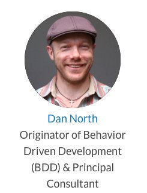
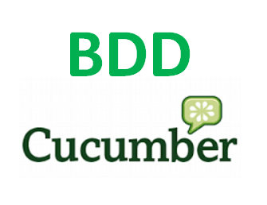
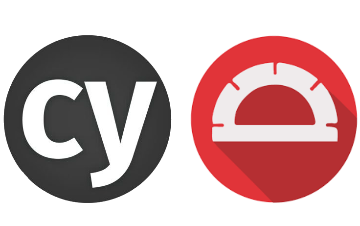

Charla Técnica:
10 Cosas que Necesitas Saber Sobre BDD
+ Demo SpecFlow y Cypress
- Robert Rozas Navarro
- https://stackoverflow.com/users/1987838/hackerman
- https://github.com/AshWilliams

1- Qué es BDD
Dan North

BDD es una evolución de TDD (Test Driven Development o Desarrollo Dirigido por Pruebas).
De hecho, el concepto de BDD fue inicialmente introducido por Dan North como respuesta a los problemas
que surgían al enseñar TDD.
TDD está basado en 2 prácticas: Escribir las pruebas primero, y Refactorizar después:
TDD: En primer lugar, se escribe una prueba y se verifica que las pruebas fallan.
A continuación, se implementa el código que hace que la prueba pase satisfactoriamente
y seguidamente se refactoriza el código escrito
En BDD también vamos a escribir las pruebas antes de escribir el código fuente,
pero en lugar de pruebas unitarias, lo que haremos será escribir pruebas que verifiquen que
el comportamiento del código es correcto desde el punto de vista de negocio.
Tras escribir las pruebas escribimos el código fuente de la funcionalidad que haga que
estas pruebas pasen correctamente. Después refactorizamos el código fuente.
BDD es un proceso de desarrollo de software que trata de combinar los aspectos puramente técnivos
y los de negocio, de manera que tengamos un marco de trabajo, y un marco de pruebas, en el que los
requisitos de negocio formen parte del proceso de desarrollo.
2- Qué es Cucumber

Cucumber es una de las herramientas que podemos utilizar para automatizar nuestras
pruebas en BDD. Cucumber nos va permitir ejecutar descripciones funcionales en texto
plano como pruebas de software automatizadas.
Cucumber fue creada en 2008 por Aslak Hellesoy y está escrito en Ruby,
aunque tiene implementaciones para casi cualquier lenguaje de programación:
JRuby (usando Cucumber-JVM), Java, Groovy, JavaScript,
JavaScript (usando Cucumber-JVM y Rhino), Clojure, Gosu, Lua,
.NET (usando SpecFlow), PHP (usando Behat), Jython, C++ o Tcl..
3- Qué es Gherkin
Feature: SpecFlowCalculadora
In order to avoid silly mistakes
As a math idiot
I want to be told the sum of two numbers
@mytag
Scenario: Sumar Dos Números
Given Dado Ingrese 50 a la Calculadora
And Y Ingrese 70 a la calculadora
When Cuando invoco Sumar
Then Entonces el resultado debiese ser 120
Scenario: Restar Dos Números
Given Ingresan 300 a la Calculadora
And Y Ingresan 120 a la calculadora
When Cuando llamo a Restar
Then El resultado de la resta debiese ser 180
Gherkin es el lenguaje utilizado para describir las características y escenarios en Cucumber,
proporciona una forma común para que los interesados en negocios, los analistas y los desarrolladores describan el software
y escriban las pruebas de aceptación. Si bien la logística de la estructura de las declaraciones de Gherkin es más
o menos la misma entre las implementaciones, gran parte de la gramática difiere de un proyecto a otro.
Las declaraciones básicas "Dado ... Cuándo ... Entonces" como terminología común permiten a los
equipos construir sus propias condiciones, acciones y descripciones de resultados comprobables.
4- Palabras Clave
Gherkin es el lenguaje utilizado para describir las características y escenarios en Cucumber,
proporciona una forma común para que los interesados en negocios, los analistas y los desarrolladores describan el software
y escriban las pruebas de aceptación. Si bien la logística de la estructura de las declaraciones de Gherkin es más
o menos la misma entre las implementaciones, gran parte de la gramática difiere de un proyecto a otro.
Las declaraciones básicas "Dado ... Cuándo ... Entonces" como terminología común permiten a los
equipos construir sus propias condiciones, acciones y descripciones de resultados comprobables.
5- Qué es SpecFlow
Gherkin es el lenguaje utilizado para describir las características y escenarios en Cucumber,
proporciona una forma común para que los interesados en negocios, los analistas y los desarrolladores describan el software
y escriban las pruebas de aceptación. Si bien la logística de la estructura de las declaraciones de Gherkin es más
o menos la misma entre las implementaciones, gran parte de la gramática difiere de un proyecto a otro.
Las declaraciones básicas "Dado ... Cuándo ... Entonces" como terminología común permiten a los
equipos construir sus propias condiciones, acciones y descripciones de resultados comprobables.
6- SpecFlow en Visual Studio 2017
7- Demo BDD En Visual Studio 2017
Gherkin es el lenguaje utilizado para describir las características y escenarios en Cucumber,
proporciona una forma común para que los interesados en negocios, los analistas y los desarrolladores describan el software
y escriban las pruebas de aceptación. Si bien la logística de la estructura de las declaraciones de Gherkin es más
o menos la misma entre las implementaciones, gran parte de la gramática difiere de un proyecto a otro.
Las declaraciones básicas "Dado ... Cuándo ... Entonces" como terminología común permiten a los
equipos construir sus propias condiciones, acciones y descripciones de resultados comprobables.
8- Generación de Documentación Viva
Gherkin es el lenguaje utilizado para describir las características y escenarios en Cucumber,
proporciona una forma común para que los interesados en negocios, los analistas y los desarrolladores describan el software
y escriban las pruebas de aceptación. Si bien la logística de la estructura de las declaraciones de Gherkin es más
o menos la misma entre las implementaciones, gran parte de la gramática difiere de un proyecto a otro.
Las declaraciones básicas "Dado ... Cuándo ... Entonces" como terminología común permiten a los
equipos construir sus propias condiciones, acciones y descripciones de resultados comprobables.
9- Qué es Cypress.io

Cypress es una herramienta de prueba de última generación construida para la web moderna.
Nos ocupamos de los principales puntos críticos que enfrentan los desarrolladores y los
ingenieros de control de calidad cuando prueban aplicaciones modernas.
Hacemos que sea simple para:
Configurar pruebas
Escribir pruebas
Ejecutar pruebas
Pruebas de depuración
Cypress se compara más a menudo con el selenio; sin embargo, Cypress es fundamental y arquitectónicamente diferente.
Cypress no está restringido por las mismas restricciones que el Selenium.
Esto le permite escribir pruebas más rápidas, fáciles y confiables..
10- Demo Cypress.io
describe('Nubox Test Suite', function () {
it('Test título de página inicio = Software para contadores y pymes | Nubox', function () {
// https://on.cypress.io/visit
cy.visit('https://www.nubox.com')
// Here we've made our first assertion using a '.should()' command.
cy.title().should('include', 'Software para contadores y pymes | Nubox')
// ↲ ↲ ↲
// subject chainer value
})
})
10.1- Menciones Honorables
- Katalon Studio - Gratis:
https://www.katalon.com/katalon-studio/
- Unified Functional Testing (UFT) - Pago:
https://software.microfocus.com/en-us/products/unified-functional-automated-testing/overview
- Ghost Inspector - Freemium:
https://ghostinspector.com/
Custom Events
Additionally custom events can be triggered on a per slide basis by binding to the data-state name.
Reveal.addEventListener( 'customevent', function() {
console.log( '"customevent" has fired' );
} );
Clever Quotes
These guys come in two forms, inline:
“The nice thing about standards is that there are so many to choose from”
and block:
“For years there has been a theory that millions of monkeys typing at random on millions of typewriters would
reproduce the entire works of Shakespeare. The Internet has proven this theory to be untrue.”
Pretty Code
function linkify( selector ) {
if( supports3DTransforms ) {
var nodes = document.querySelectorAll( selector );
for( var i = 0, len = nodes.length; i < len; i++ ) {
var node = nodes[i];
if( !node.className ) ) {
node.className += ' roll';
}
};
}
}
Courtesy of highlight.js.
Spectacular image!

Export to PDF
Presentations can be exported to PDF, below is an example that's been uploaded to SlideShare.
Take a Moment
Press b or period on your keyboard to enter the 'paused' mode. This mode is helpful when you want to take distracting slides off the screen
during a presentation.